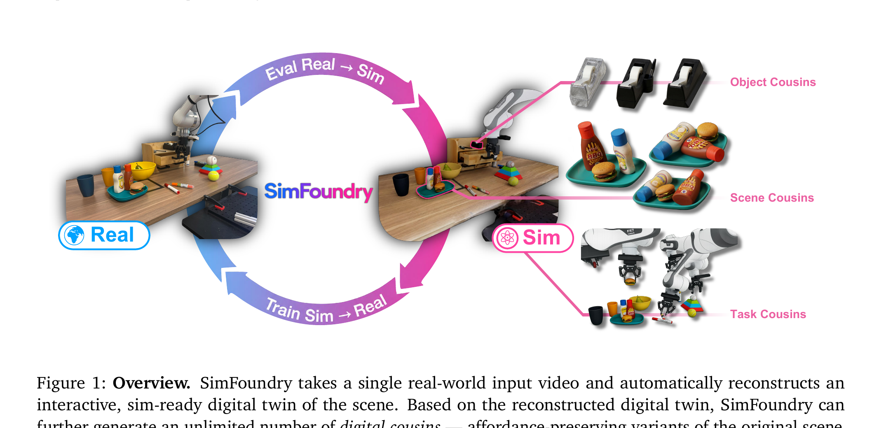
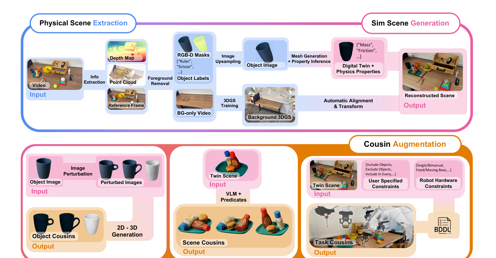

SimFoundry: Modular and Automated Scene Generation for Policy Learning and Evaluation
Nadun Ranawaka, Josiah Wong et al. · NVIDIA / Stanford / Georgia Tech / UT Austin / Toronto · Li Fei-Fei 等参与 · arXiv:2606.28276v4 · 2026 · Zotero 9E8E7KYA · PDF 8LW7KPXF
它不是再做一个“更好看的扫描器”，而是把一段真实视频自动编译成可渲染、可碰撞、可换物体、可换布局、可换任务的仿真场，再同时服务 real-to-sim 评测与 sim-to-real 训练。
§1 闭环不是 Real→Sim，而是 Real→Sim→Real
输入是一段单目真实视频；输出首先是与真实现场严格对齐的 digital twin，然后沿物体、场景、任务三条轴扩成 digital cousins。仿真不是终点：一条支路拿已有真机 policy 进仿真做低成本比较，另一条支路在 cousins 上生成训练数据，再零样本部署回真机。

§2 “看起来像”与“交互起来像”由不同模块负责
系统先用深度、点云、分割 mask 和标签拆前景；可交互物体走 image-to-3D mesh、尺度/位姿对齐、关节恢复、碰撞几何、质量与摩擦估计；被移除前景后的背景视频则训练 3D Gaussian Splatting。最后把两路资产在 PyBullet 中消除穿插、静置到物理稳定，再导出到 IsaacLab 等机器人仿真器。

① 感知
从视频恢复相机、深度、点云、mask 与对象语义。
输入是什么：相机图像或视频，加上任务指令和机器人当前状态。它们还是原始观测，模型尚未把它们变成可用于预测或控制的特征。
这一步究竟做什么：本步骤执行“① 感知”。具体来说，从视频恢复相机、深度、点云、mask 与对象语义。 这里处理的只是整条链路中的一个接口：把上一步的结果整理成下一步能够正确读取和继续计算的形式。
输出到哪里：经过本步骤处理、含义更明确的中间结果。这个结果会交给下一步“② 资产化”继续处理。
为什么不能省略：它把未经处理的原始问题变成后续模块可以计算的输入，是整条链路的起点。
② 资产化
前景对象变成 mesh；铰接物体额外恢复可动部件和关节。
输入是什么：来自上一步“① 感知”的产物：经过本步骤处理、含义更明确的中间结果。本步骤还会按论文设置读取当前条件、时间步或训练信号。
这一步究竟做什么：本步骤执行“② 资产化”。具体来说，前景对象变成 mesh；铰接物体额外恢复可动部件和关节。 它把真实世界素材转换为既能渲染外观、又能与物理模块对齐的数字表示。
输出到哪里：一个可渲染或可交互的数字场景表示。这个结果会交给下一步“③ 视觉背景”继续处理。
为什么不能省略：只复制外观不能产生可信交互；需要把视觉表示与碰撞、关节或动力学对应起来，策略训练才有物理意义。
③ 视觉背景
对去前景视频训练 3DGS，复现难以手工建模的真实背景外观。
输入是什么：来自上一步“② 资产化”的产物：一个可渲染或可交互的数字场景表示。本步骤还会按论文设置读取当前条件、时间步或训练信号。
这一步究竟做什么：本步骤执行“③ 视觉背景”。具体来说，对去前景视频训练 3DGS，复现难以手工建模的真实背景外观。 它把真实世界素材转换为既能渲染外观、又能与物理模块对齐的数字表示。
输出到哪里：经过本步骤处理、含义更明确的中间结果。这个结果会交给下一步“④ 物理编译”继续处理。
为什么不能省略：它承担上下两步之间的接口；缺少它，前一步产生的信息无法以正确格式或正确含义传到下一步。
④ 物理编译
补碰撞体、质量、摩擦，放进 PyBullet 检查穿插与稳定性。
输入是什么：来自上一步“③ 视觉背景”的产物：经过本步骤处理、含义更明确的中间结果。本步骤还会按论文设置读取当前条件、时间步或训练信号。
这一步究竟做什么：本步骤执行“④ 物理编译”。具体来说，补碰撞体、质量、摩擦，放进 PyBullet 检查穿插与稳定性。 这里处理的只是整条链路中的一个接口：把上一步的结果整理成下一步能够正确读取和继续计算的形式。
输出到哪里：经过本步骤处理、含义更明确的中间结果。这个结果会交给下一步“⑤ 扩增与闭环”继续处理。
为什么不能省略：只复制外观不能产生可信交互；需要把视觉表示与碰撞、关节或动力学对应起来，策略训练才有物理意义。
⑤ 扩增与闭环
生成 cousins，执行 policy 评测或合成轨迹训练，再回真实世界验证。
输入是什么：来自上一步“④ 物理编译”的产物：经过本步骤处理、含义更明确的中间结果。本步骤还会按论文设置读取当前条件、时间步或训练信号。
这一步究竟做什么：本步骤执行“⑤ 扩增与闭环”。具体来说，生成 cousins，执行 policy 评测或合成轨迹训练，再回真实世界验证。 模型从相同起点产生候选未来，后续模块再检查这些未来是否符合条件、物理规律或动作需要。
输出到哪里：一个或多个候选未来、动作或轨迹，以及必要的中间状态。这是图中这条链路的最终产物，随后会进入真实执行、模型更新或指标评测。
为什么不能省略：机器人动作会改变下一次观测；只有执行后重新读取现实，才能发现预测误差并阻止错误连续累积。
§3 Digital cousins：不是无约束 domain randomization
| Object cousins | 改变实例、外观、几何和拓扑，但保留抓取/倾倒等 affordance；平均零样本 sim-to-real 成功率提升 17%。 |
| Scene cousins | 改变对象组合及语义布局，训练 relation/layout robustness；论文摘要报告平均提升 21%。 |
| Task cousins | 由对象 predicates、用户约束与机器人硬件约束提出相关任务；三类中平均提升最大，为 40%。 |
WAM 学的是“状态—动作—后果”的统计模型；SimFoundry 负责把真实世界变成可干预的数据工厂和评测场。前者提供可学习的动力学 prior，后者提供可复现的 intervention 与 ground truth，两条线互补。
§4 它如何证明仿真值得相信
- Pearson $r$
- 衡量不同 policy 的真实分数与仿真分数是否沿同一线性趋势变化。
- MMRV
- 衡量仿真是否把 policy 排名颠倒；越接近 0 越好。
- 论文结果
- 7 个操作任务、5 类 policy 上，平均 $r=0.911$、MMRV=0.018；把长任务拆成 sub-task，平均 Pearson 从 0.90 提至 0.95。
Across 7 manipulation tasks and 5 policy architectures, SimFoundry simulation evaluations strongly predict real-world performance.
§5 这篇论文反而给出了 3DGS / 4DGS 的正确边界
重要，但不是 world model 本体。3DGS/4DGS 是高效场景表示和渲染层，能降低 real-to-sim 的外观域差、支持新视角和动态回放；它不天然给出物体身份、关节拓扑、接触、质量、摩擦，更不回答“机器人采取没见过的动作之后会发生什么”。SimFoundry 的工程选择很诚实：背景用 3DGS，接触对象用 mesh + articulation + collision + physics。
| 3D/4DGS 强项 | 真实外观、新视角、动态时序表示、实时或接近实时渲染。 |
| WAM 强项 | 动作条件预测、任务相关 latent、策略或规划接口。 |
| Physics 强项 | 接触约束、刚体/关节动力学、反事实干预。 |
| 最有价值组合 | GS 做视觉观测层，mesh/physics 做可交互状态，world model 学残差动力学、不确定性和长期后果。 |
§6 当前限制，以及我对这条路线的判断
| 场景假设 | 当前主流程仍偏桌面任务和单个近似平面，复杂非刚体与大场景不是已解决问题。 |
| 模型级联误差 | 大量依赖现成 VLM、深度、分割、image-to-3D 与关节恢复模块，继承每一环的 failure mode。 |
| 背景成本 | 自动背景的两遍视频修补在单 GPU 约需 90 分钟。 |
| Splat 工程问题 | 近场 clipping 与渲染延迟仍会迫使部分机器人实验退回 mesh 背景。 |
| 单目歧义 | 尺度、遮挡背面、反光/无纹理表面仍需要先验或少量人工修正。 |
如果你做 world model，把 SimFoundry 当作数据与验证基础设施，不是与 JEPA/WAM 平级的预测架构。值得押注的接口是：从 sim 的显式 state/physics 自动蒸馏到 latent WM，再用真实视频做视觉校准和 residual dynamics。